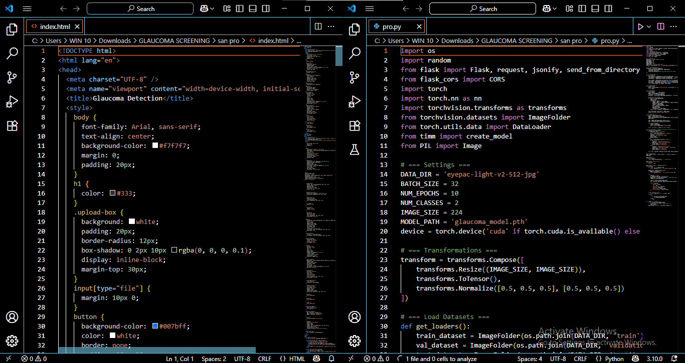
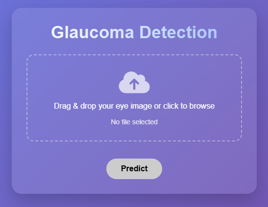
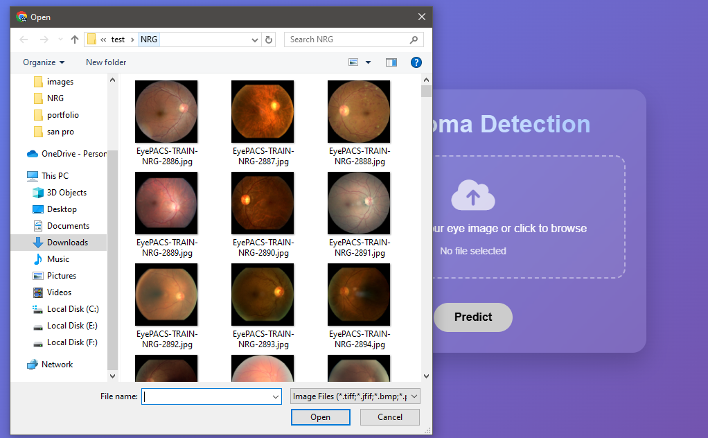
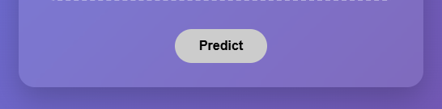
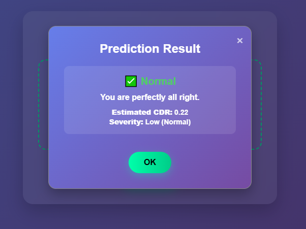
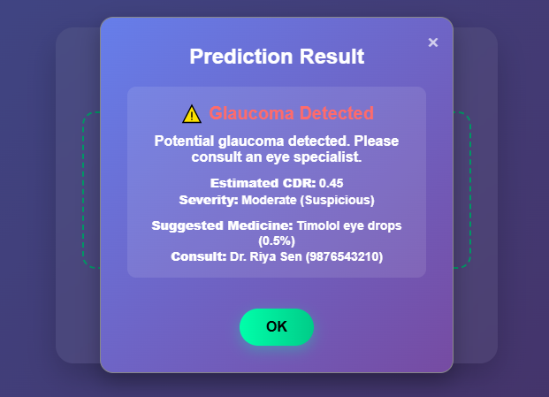

This website is developed to raise awareness and provide a basic screening tool for detecting signs of glaucoma in eye images. It uses machine learning to predict the probability of glaucoma based on image input. Glaucoma, one of the leading causes of permanent blindness worldwide, often progresses silently until it reaches an advanced stage. Early detection is essential to preventing vision loss, and color fundus photography is a widely used non-invasive screening method. However, the significant variation in image quality across different screening environments, especially in rural and telemedicine settings, is a significant barrier to accurate diagnosis and automated systems. Inspired by the AIROGS challenge, this project offers a robust deep learning-based glaucoma screening system designed to address these problems. Using Generative Adversarial Networks (GANs) and super-resolution techniques, it enhances low-quality retinal images, restoring important details needed for reliable analysis. The model can function consistently across datasets with different image distributions and quality levels thanks to the integration of a gradient reversal layer for domain adaptation. The classification pipeline combines Vision Transformers (ViT) to capture intricate retinal structures and global dependencies with EfficientNet-B0 for effective feature extraction. The system showed excellent accuracy and adaptability during training and testing on the Zenodo dataset, indicating that it is ready for practical implementation. By reducing reliance on clinical expertise, this automated and scalable solution makes glaucoma detection more accessible and early in a variety of healthcare settings.
Non-Referable Glaucoma
Referable Glaucoma
1. By running the code, you can review the output
2. The output will open
3. Upload the captured eye image
4. Click the Predict button to get the result
5. If the result shows "Normal", there is no sign of glaucoma
6. If the result shows "High", glaucoma is detected. Consult a doctor immediately. As shown, you can take medicine or call the doctor for advice.
